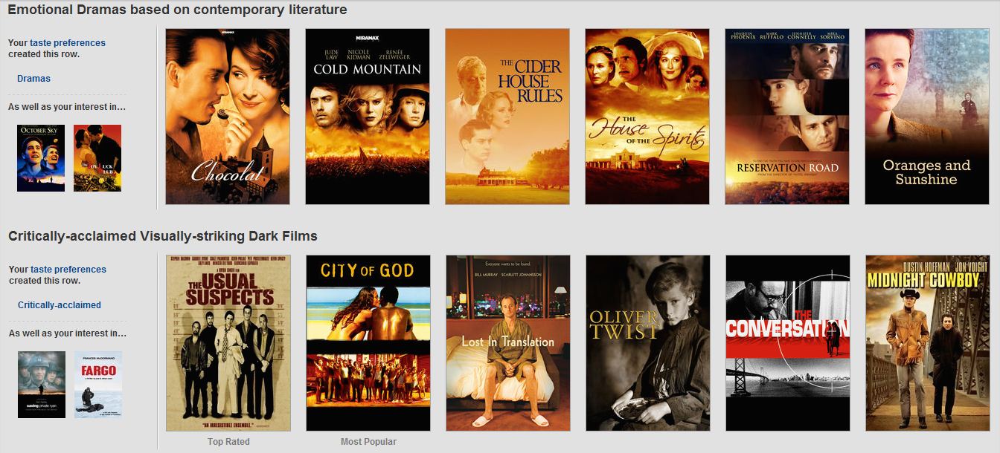
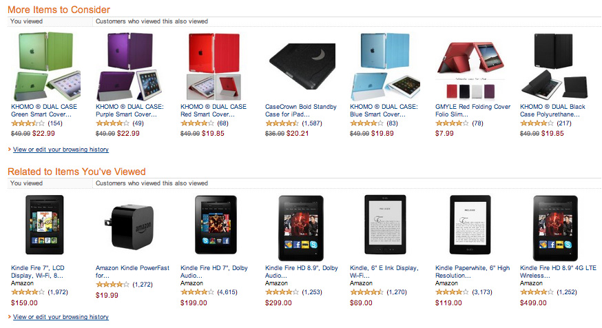
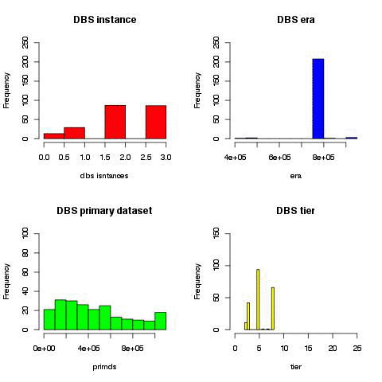
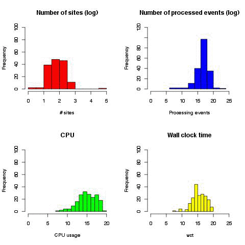
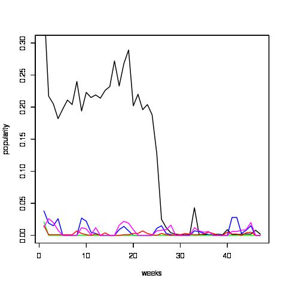

Mining CMS Computing
Netflix
suggests movies we may like to watch
Amazon
guesses what we may buy next
CMS experiment
-
In Run I, we collected 10B raw data evetns, and produced 15B MC events
-
Data transfer system (PhEDEx) peeks at 5 GB/s, distributing more than 100 PB of replicas over all sites
(40-80TB/day is export rate of T1 sites)
-
We collected O(TB) of meta-data, e.g. Data Bookkeeping System (DBS) has 220K datasets, 40M files
-
An average 250 daily users submit 200K jobs per day,
reaching peaks of 500K jobs that access distributed data.
Data at Big scale is not that easy to manage
Project scope
-
CMS Analytics
(cms-dmwm-analytics@cern.ch)
group would like to improve our understanding of CMS computing data,
full list of projects:
http://bit.ly/1CWvl6U
-
We have historical data what users did in a past
and we want to predict what they'll do in near by future.
-
Initial goal is to predict popularity of new datasets.
Why do we need this
-
15PB of data are resident @ T2 sites; 4.5PB added just in the last
year of LHC operation
-
O(20PB): volume of data transfered to the CMS T2 sites, transfer ~ 5x Resident data
-
How well do we use our resources, what is used/unused, find skipes/interests in physics group
- CMS formed Dynamic Data Placement group to optimize data transfer
based on historical information of dataset usage
- What if we'll predict which datasets will become popular once they appear on a market, this will help to reduce latency of dataset availability and better utilization of our resources
What do we know
- Meta-data information about datasets:
# files, # events, releases, data types, job information, etc.
-
Affiliations: CMS groups, physics groups, on-going analysis, etc.
- Activities: physics groups, panel reviews, up-coming events/conferences
How we can do it

Dataframe preparation
Queried 5 CMS data-services: DBS, PhEDEx, SiteDB, PopularityDB, Dashboard
- used 10 APIs to get data content
- feed internal cache with ~220K datasets from 4 DBS instances,
~900 release names, 500+ site names, ~5k people DNs.
- placed ~800K queries
The final dataframe is constructed out of 78 variables and has 52 files and ~600K rows
- each file is worth of 1 week of CMS data, ~600KB zipped/file
- each file has about ~1K of popular datasets plus 10K random "un-popular" datasets
Elapsed time: ~4h to 1h per job, times fade out due to cache usage (MongoDB)
All jobs run on two CERN VM w/ N jobs/core splitting
We anonymized all data and performed factorization via internal cache
id,cpu,creator,dataset,dbs,dtype,era,naccess,nblk,nevt,nfiles,nlumis,nrel,nsites,nusers,parent,primds,proc_evts,procds,rel1_0,rel1_1,rel1_2,rel1_3,rel1_4,rel1_5,rel1_6,rel1_7,rel2_0,rel2_1,rel2_10,rel2_11,rel2_2,rel2_3,rel2_4,rel2_5,rel2_6,rel2_7,rel2_8,rel2_9,rel3_0,rel3_1,rel3_10,rel3_11,rel3_12,rel3_13,rel3_14,rel3_15,rel3_16,rel3_17,rel3_18,rel3_19,rel3_2,rel3_20,rel3_21,rel3_22,rel3_23,rel3_3,rel3_4,rel3_5,rel3_6,rel3_7,rel3_8,rel3_9,relt_0,relt_1,relt_2,rnaccess,rnusers,rtotcpu,s_0,s_1,s_2,s_3,s_4,size,tier,totcpu,wct
999669242,207737071.0,2186,20186,3,0,759090,14251.0,6,21675970,2158,72274,1,10,11.0,5862538,335429,30667701,373256,0,0,0,0,1,1,0,0,0,0,0,0,1,1,0,0,0,0,0,0,0,0,0,0,0,0,0,0,0,0,0,0,1,0,0,0,0,0,0,0,0,0,1,0,1,0,1,0.6,0.4,3.9,0,3,8,0,0,8002,5,64280.0,216946588.0
332990665,114683734.0,2186,176521,3,1,759090,21311.0,88,334493030,32621,86197,1,4,8.0,6086362,968016,123342232,1037052,0,0,0,0,1,2,0,0,0,0,0,0,1,2,0,0,0,0,0,0,0,0,0,0,0,0,0,0,0,0,0,0,1,0,0,0,0,0,0,0,0,1,1,0,1,0,2,0.8,0.3,3.5,0,6,9,0,0,96689,3,58552.0,276683510.0
....
2013/2014 datasets are available at
https://git.cern.ch/web/CMS-DMWM-Analytics-data.git
Data transition through 2014 on weekly basis
|  |  |
Dataset popularity
|  |
Dataset access is like stock market, but N(datasets) >> N(stocks @ NASDAQ)
Different dataset popularity metrics

|

|
From data to prediction
- Generate dataframe or get it from existing repository
- Transform data into suitable format for ML
- Build ML model
- use classification or regression techniques
- train and validate model, e.g. use 2013 data for training and 2014 for validation
- Generate new data and transform it similar to step #2.
- Apply your best model to new data to make prediction
- Verify prediction with popularity DB once data metrics become available
Model prediction
Run 5 different models: - Random Forest Classifier - Linear SVC - SGDClassifier - VW online-classifier - xgboost classifier Datasets we predict : 605691 Predicted as popular : 66583 Dataset in popdb sample : 23397 We predicted almost 3x times more datasets than we had. But we may need to choose different classifiers for different data-tiers. TIER TP(%) TN(%) FP(%) FN(%) -------------------------------------- AOD 49.65 31.58 0.62 18.15 AODSIM 24.35 52.42 0.76 22.47 MINIAOD 0.59 95.31 0.88 3.23 MINIAODSIM 11.99 59.37 0.67 27.98 USER 9.65 72.16 1.25 16.93 ...... |
We have a problem to solve
-
Build/tune the model as we go
-
Mine HyperNews/twikis and find physicist's interests
-
Mine HEP events, e.g. CERN indico calendar, and be predictive